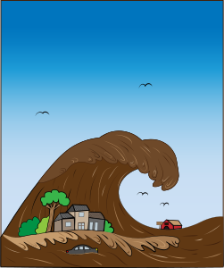
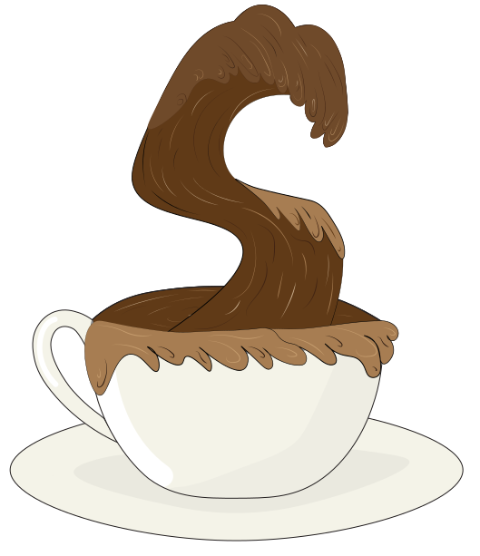

Introduktion
Velkommen til min portfolio! Her finder du et univers der afspejler mit 1. semester som mulitimedie studerende på EK. Du vil her kunne danne et overblik over de projekter og temaer jeg har arbejdet med - Både hvilken proces der har ledt til det færdige resultat , men også hvad jeg personligt har lært fra dem. Jeg håber du vil følge med på min rejse!

Mit grafiske arbejde

